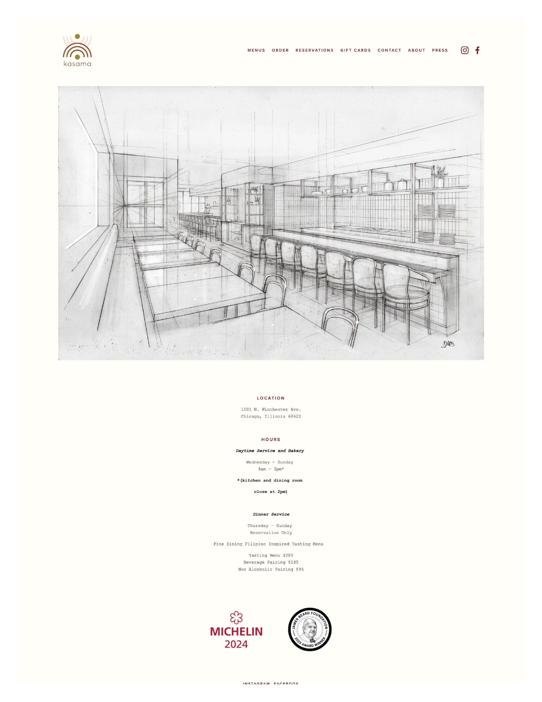
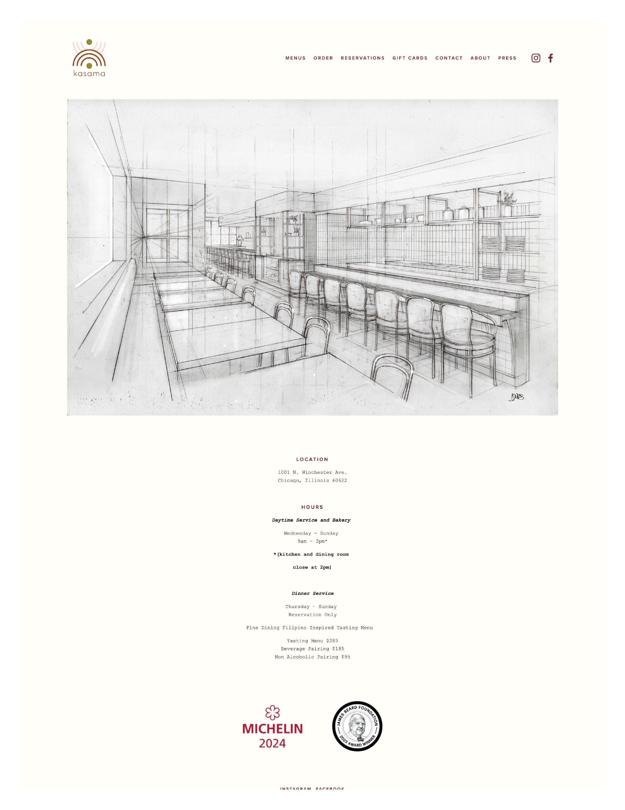
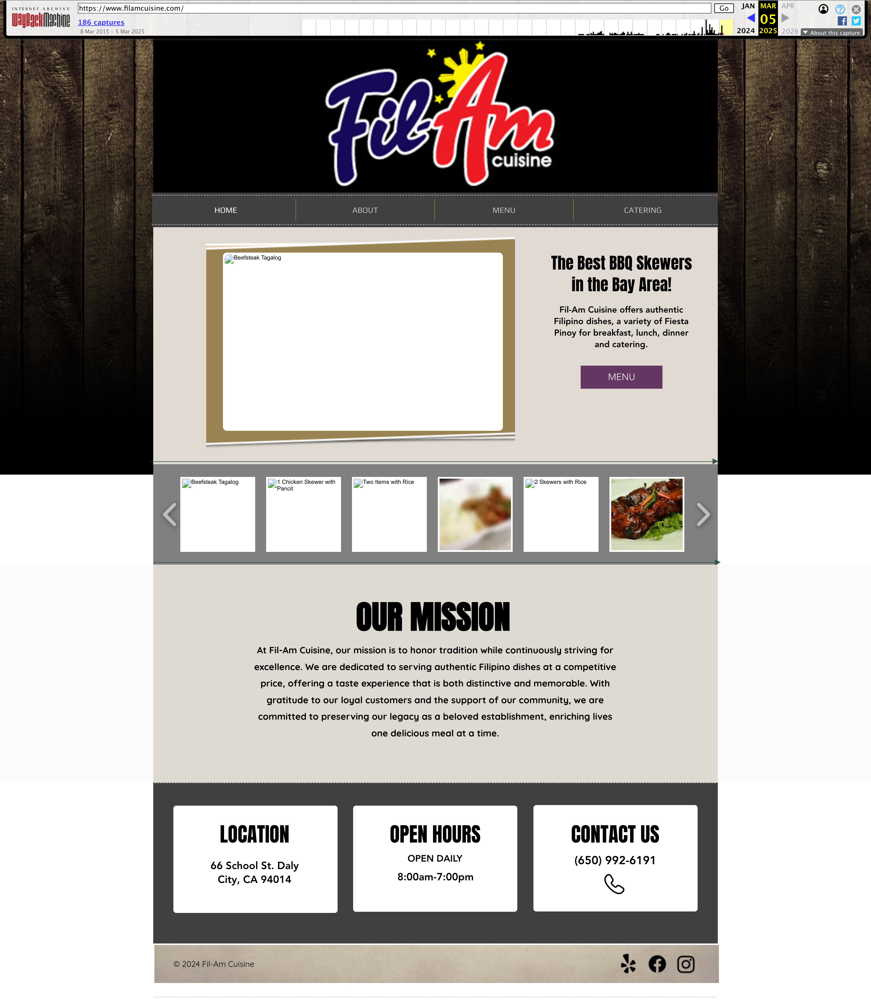
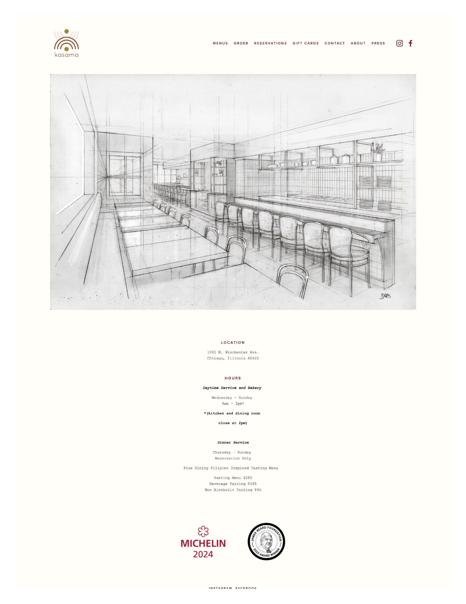
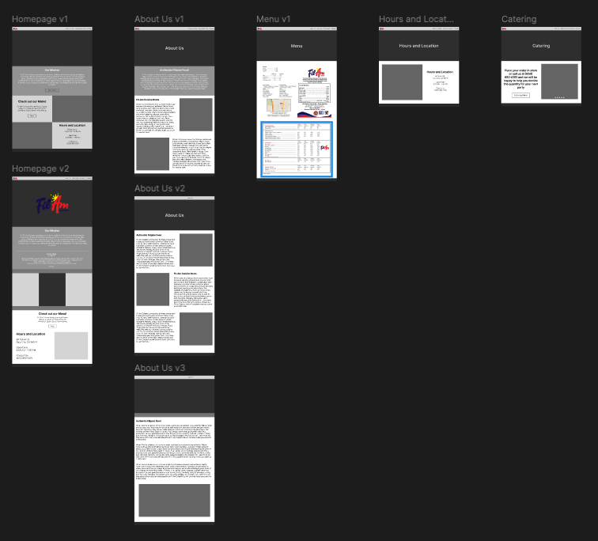
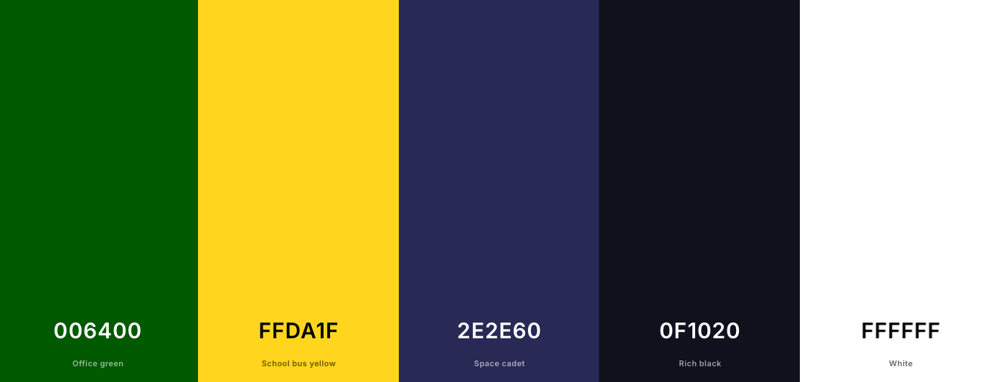
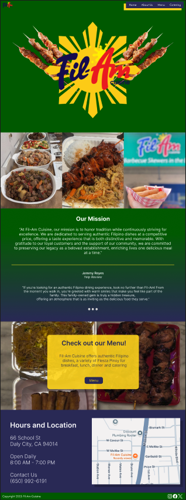
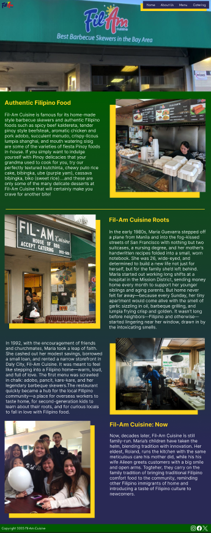
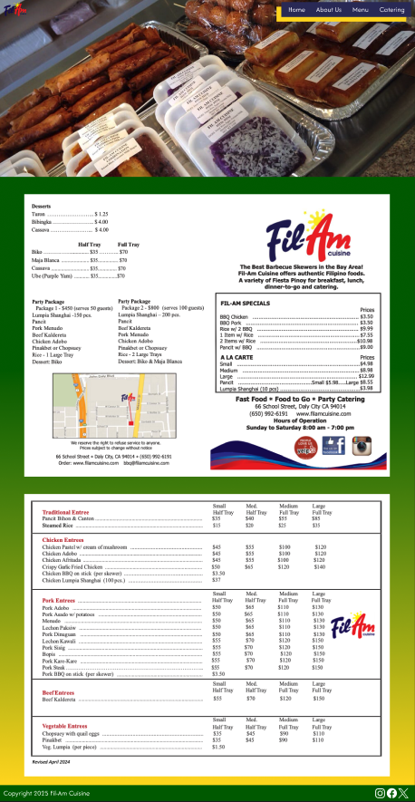
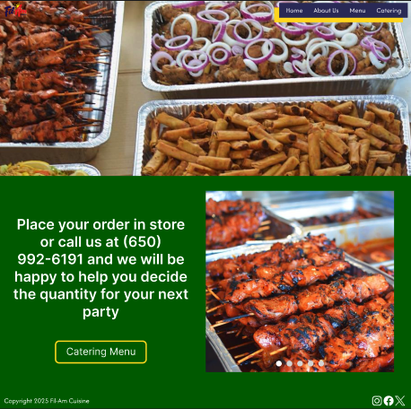

Fil-Am Cuisine is a community favorite for Filipino food and their famous barbeque skewers. Locals and tourists alike, line up to taste their secret family recipes. After more than forty years in business, Fil-Am cuisine still brings in hundreds of customers everyday. Although they have an active website, I wanted to redesign it in my own style.
Fil-Am Cuisne's current homepage features a straightforward and user-friendly design that reflects the restaurant's focus on authentic Filipino comfort food. The homepage provides the necessary information a visitor may need such as their hours and locations, their mission statement, and a rotating gallery of images showcasing popular dishes such as BBQ skewers, pancit, and beefsteak tagalog to provide visitors with an appetizing preview of the menu offerings. The homepage flows well with their use of images, their distribution of elements, and the three boxes with their hours, location, and contact information. Visually, the site incorporates a variety of different elements including a wood background and a navigation bar similar to a strip of film, but they have a disconnect in their relevance. The wooden background gives homage to traditional Filipino homes called “Bahay Kubo” but the film strip navigation bar does not relate to the wooden background or their restaurant. In addition, their layout seems disorganized. Their logo takes up a sizable amount of space on top of the navigation bar and the main information and links are in the center making it seem that the background was placed to fill up the empty space.
Note: Fil-Am Cuisine's website was shut down and I had to use the WayBack Machine to get a screenshot
Their “About” page gives a summary of their restaurant, their food, and their catering services, but does not dive into their roots and beginnings for visitors wanting to know about their history. Although it does not overwhelm the visitor with a lot of text, it achieves the opposite by not giving a lot of information and lacks the personable touch that is common with small family-owned local businesses. The “About” page also lacks much interaction with visitors by exclusively having text.
Their “Menu” page has a good layout with a pdf of their menu in the corner and four pictures and hyperlinks showcasing the four different types of food they specialize in: Fil-Am Specials, A La Carte, Entrees, and Desserts. Although it is designed well, the “Menu” page separates their menu too much by having it be broken down into four different hyperlinks. In addition, the Entree hyperlink brings visitors to the homepage and expects them to go through each image for their menu. The Fil-Am Specials hyperlink sends the visitor to a page that is unavailable. The dessert menu does not have a hyperlink for visitors to see their desserts. The only working and well designed menu page is the A La Carte section.
The “Catering” Page provides images of their most popular dishes, but gives redundant information. Under the images in small text, the page gives the restaurant's phone number and tells the visitor to call for their catering needs. Below that is extremely bolded text that is difficult to read and gives the same information.
Overall, Fil-Am Cuisine's website functions well and gives all the information visitors need, but has issues with navigation, flow, and disconnecting elements.
For inspiration in this redesigning, I looked into popular restaurants and other Filipino restaurants' websites to see how their website flows and reflects their food, culture, and theme through their design. The four main restaurants I looked into were Abaca, Kasama, Miss Lily's, and China Poblano.

Most of these websites utilized bold and eye-catching colors to add character to their website while having a layout that utilized images of their food as much as possible. Since all of these restaurants are more focused on a dine-in experience, there were some elements and tools that were not necessary for Fil-Am Cuisine's redesign.
My design process started out by writing down key ideas and design choices I thought were important to include based off the current website and the website inspirations I researched. I wrote down what information I wanted each page to have and the key functions they should accomplish. For example, I wanted the Homepage to give a good sense of what the restaurant is, feature pictures of their most popular dishes, and have important information like their hours and location. From there, I created hand drawn sketches to organize my ideas and easily create mockups to see how they would look.
After that, I went on Figma to create Lo-Fi prototypes of each page and the different design layouts ideas. I personally like to create multiple versions of pages because it helps me see how different ideas would look and choose elements that I think would work well into the final product. Multiple design choices helps me mix and match different pages, tweak the overall designs to flow better, and add in elements from different versions. I then create the Hi-Fi prototype to give me an even better overview of all my designs and make any necessary changes. Finally, I created a final prototype that would be my definitive version.
For my redesign, I decided to focus on using a simple color palette with bold colors similar to previous websites. I played with different color palettes and worked with different complimentary colors to see what would fit. In the end, I focused on using dark green as the main color throughout the site and incorporating the yellow and blue from the logo to add color variety.
The redesigned homepage opens with a loading animation when the visitor first visits that features the restaurant's logo and different elements fading in like the Filipino sun and the PNGs of their famous barbeque skewers.
The animation blends seamlessly into the top of the new homepage with the navigation bar moving into the screen with a dark green to dark blue gradient background. Below the logo, is an image carousel featuring their food from happy and satisfied customers. Following is their mission statement and another carousel featuring Yelp reviews from locals and newcomers talking about their experiences with the friendly employees and the delicious food. After that is a section with an image of their famous barbeque along with their pancit with text urging the visitor to look at their menu. Finally, the bottom section has their hours, location, phone number, and an image of their restaurant on a map that would hyperlink to their address on Google Maps.
The redesigned About page goes into more detail about Fil-Am Cuisine's history and adds more elements with pictures throughout each section. My goal was to make visitors feel a more personal connection with the restaurant and their familial roots. These personal connections are key to family-owned business and help build on the current rapport Fil-Am Cuisine has with their community. Visitors become much more inclined to visit Fil-Am Cuisine when they understand their story and know they aren't just supporting a business, but also a family. In my new About page, I removed any unnecessary or repetitive information that could be placed in another page.
I decided to keep my design for their “Menu” page to be simple and use their PDF menu. Because of how their business operates, they do not have a set menu and instead change the different entrees they serve everyday. By using their PDF menu, visitors can see their meal prices and the different party packages they have for catering without splitting it into four different menu pages. In order to add variety, I added a green to yellow gradient to contrast the green to blue gradient I used for the “Home” and “About” page.
The Catering page is very simple by having a carousel of their catering trays and the same information from their current catering page. I removed the repeating information, made the text clear, and a button to redirect visitors to their menu with their catering prices.
Although I am satisfied with my final design, I believe there will always be room for improvement. With possibilities of opening new branches, new design techniques, and other factors, I believe I can update my redesign to be even better and add new interactions between visitors and the website. For now, I feel my redesign of Fil-Am Cuisine's website expands upon its current capabilities with a new look that catches any visitor's eye.